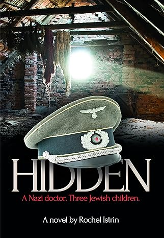
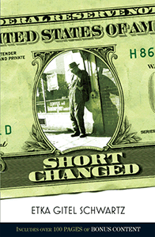

| Name of Book |
Cover |
description |
| Hidden |

|
Hidden is a novel, riveting, suspenseful, and exciting, a real page-turner. It's a saga that takes us through a decade
of brutal war and fragile peace; that brings us from wartime Germany to the DP camps, post-war America and embattled
Palestine; that introduces us to many unforgettable characters, some evil, some righteous, many flawed but searching.
But more: though the story is fictional, it holds many truths the truths of Jewish survival, faith and destiny. |
| ShortChanged |

|
Originally serialized in Binah Magazine, this popular story was the first feature readers turned to each week. Now
you can enjoy the story in its entirety, along with its enhancement of over 100 pages of deleted scenes, previously
published tie-in stories, behind-the-scenes features, historical photos, timeline, and The Miller Memoirs: Rochelle's
Story.
|
| Incredible |
|
This is a true story so full of non-stop action, physical and spiritual courage, Divine Providence, spine-tingling
adventure -- and an utter dedication to Torah -- that it can only be called: Incredible! |
| The Judge |

|
The Judge is the newest spine-tingler by Libby Lazewnik, author of Secret Accounts and many other acclaimed novels.
This remarkable book provides edge-of-your-seat suspense while plumbing the depths of the human heart -- an unbeatable
combination.
|
| To Vanquish the Dragon |

|
The stirring memoir of the courage and strength of Beth Jacob students and the acts of kindness and heroism they performed
even while caught between the jaws of the Nazi monster. In the ghettos and in the concentration camps, the fire of
Torah and faith burned strong and clear in the hearts of these young martyrs and survivors. |